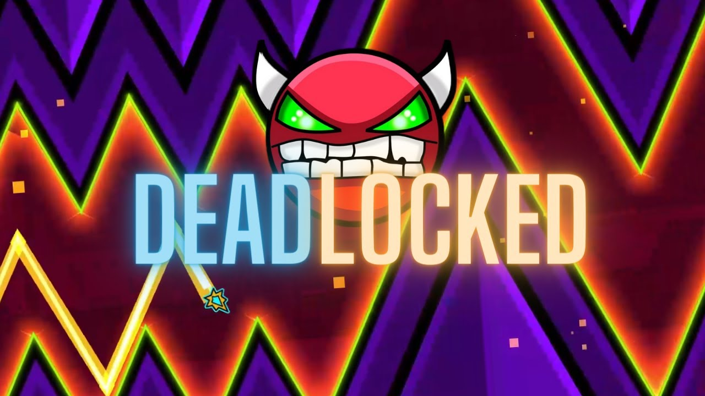

Introduction to the Game
Geometry Dash is a 2013 side-scrolling rhythm platform video game
developed by Swedish game developer Robert Topala and published by his company RobTop Games.
It was released for iOS and Android in August 2013, Windows Phone in June 2014,
and on Steam in December 2014. The player controls an icon and must navigate through levels
while avoiding obstacles. Geometry Dash includes 26 developer-made levels: 22 are auto-scrolling,
and 4 are platformer levels. It also includes a level editor, enabling players to design custom levels,
share them online, and play levels created by other users.
Copied from this website
Why I Enjoy the Game
I started Geometry Dash just over a year and a half ago. I found the game boring at first, as I couldn't get myself
to beat the third level. However, as my skills improved, I started to enjoy the games soundtracks, I found myself enjoying
the gameplay more then any other game i've played. The feeling of beating levels made me hooked to the game challenging harder
levels each time. This is why I really love this game.

My current progress on the game:
- Ispywithmylittleeye (Easy Demon) 100%
- Clubstep (Easy Demon) 100%
- The Nightmare (Easy Demon) 100%
- The Llightning Road (Easy Demon) 100%
- Deadlocked (Easy Demon) 100%
- Theory of Everything 2 (Easy Demon) 92%
- Shiver (Easy Demon) 100%
- Bloodbath (Extreme Demon) 75-100%